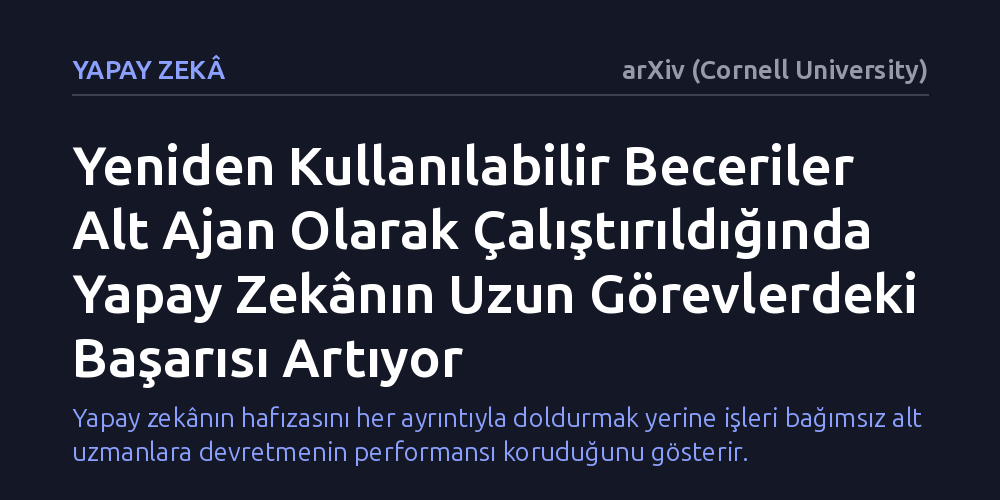

YAPAY-ZEKA · arXiv (Cornell University) · 2026-09-12
Araştırmacılar, yapay zekâ modellerinin uzun soluklu görevlerde beceri paketlerini nasıl daha verimli kullanacağını inceledi. Becerileri ana hafızaya yüklemek yerine bağımsız alt ajanlar olarak çalıştırmanın, görev başarısını belirgin şekilde artırdığı belirlendi.
Yapay zekânın hafızasını her ayrıntıyla doldurmak yerine işleri bağımsız alt uzmanlara devretmenin performansı koruduğunu gösterir.

Günümüzde büyük dil modellerine dayalı yapay zekâ sistemleri, tek bir soruya yanıt vermenin ötesine geçerek birden fazla adımı kapsayan karmaşık görevleri uçtan uca yürütmek üzere kurgulanıyor. Bu tür uzun soluklu işlerde yapay zekânın, önceden hazırlanmış kod parçalarını, rehber belgeleri ve uzmanlık talimatlarını içeren "beceri paketlerini" kullanması hedefleniyor. Böylece model her şeyi sıfırdan öğrenmek yerine hazır kütüphanelerden faydalanabiliyor.
Ancak görev adımları çoğaldıkça önemli bir sorun baş gösteriyor: Yapay zekânın aktif çalışma belleği olan bağlam penceresi aşırı bilgiyle doluyor. Biriken geçmiş veriler, ara işlemler ve uzun talimatlar modelin dikkat mekanizmasını dağıtıyor. Sonuç olarak zengin bir bilgi kütüphanesine sahip olan model, zamanla mantık yürütme kalitesini kaybederek bocalıyor.
Mevcut yaygın uygulamada bir yapay zekâya yeni bir yetenek kazandırmak için ilgili becerinin tüm talimatları doğrudan mevcut çalışma oturumuna yükleniyor. Bu yaklaşım kısa görevlerde işe yarasa da görev uzadıkça ana ajanın zihinsel yükünü katlanarak artırıyor.
Araştırmacılar bu sorunu aşmak için becerileri birer metin talimatı olarak ana hafızaya sıkıştırmak yerine, onları bağımsız birer alt ajan olarak çalıştırmayı öneriyor. Bu yöntemde ana ajan, belirli bir işi devretmek istediğinde tertemiz bir bağlam penceresine sahip yeni bir yardımcı ajan başlatıyor. Yardımcı ajan işini tamamlayıp sonucu teslim ettiğinde hafızası kapanıyor; böylece ana modelin çalışma alanı gereksiz ara ayrıntılarla kirletilmemiş oluyor.
İncelemeler, alt ajan mimarisinin her durumda kendiliğinden üstünlük sağlamadığını gösteriyor. Alt ajanların klasik yöntemi geride bırakabilmesi için beceri paketlerinin çok net girdi-çıktı sınırlarına sahip olması ve yapılacak işin adımlarını açık bir biçimde tarif etmesi gerekiyor.
Öte yandan bu yöntemin hesaba katılması gereken bir bedeli bulunuyor: İletişim maliyeti. Ana ajan ile alt ajanların birbirine iş tarif etmesi ve sonuçları aktarması, ek metin alışverişi yani fazladan jeton (token) tüketimi anlamına geliyor. Ancak deneyler, uzun görevlerde sağlanan başarım artışının bu ek maliyete değdiğini ortaya koyuyor.
Bu araştırma, yapay zekâ sistemleri tasarlanırken sıkça gözden kaçan temel bir prensibe dikkat çekiyor: Bir modele sadece daha fazla bilgi sağlamak yeterli değil; o bilginin nasıl organize edildiği ve modele nasıl sunulduğu da sonucu doğrudan belirliyor.
Önümüzdeki dönemde karmaşık yazılım veya veri analizi görevlerini yürüten sistemlerde, her işi tek başına sırtlanan devasa bağlam pencereleri yerine, sınırları iyi çizilmiş uzman alt ajanlardan oluşan modüler iş bölümü yapılarının öne çıkması bekleniyor.